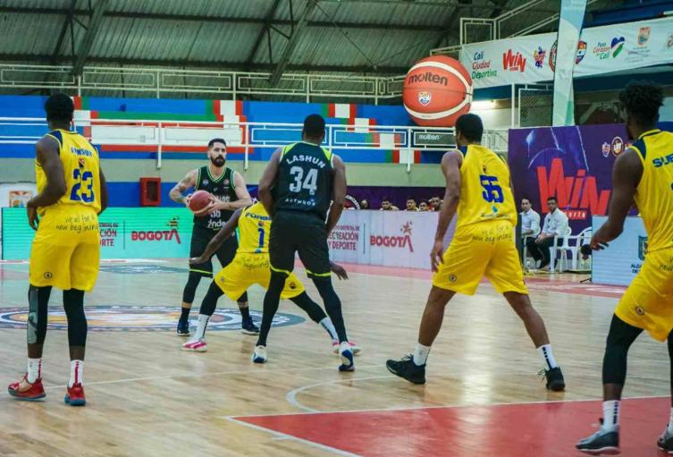
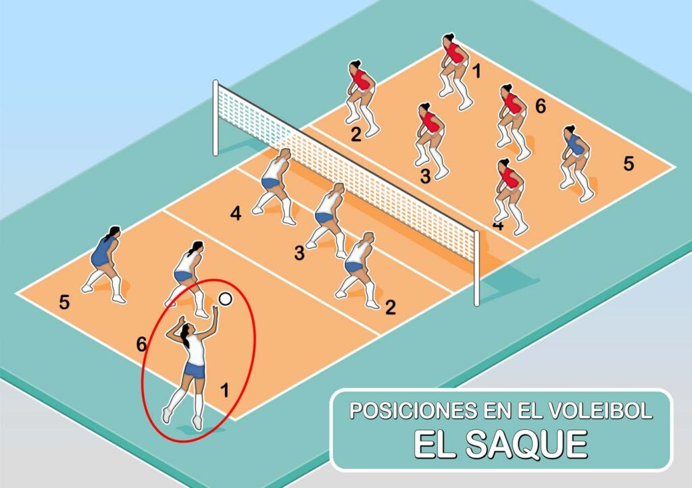
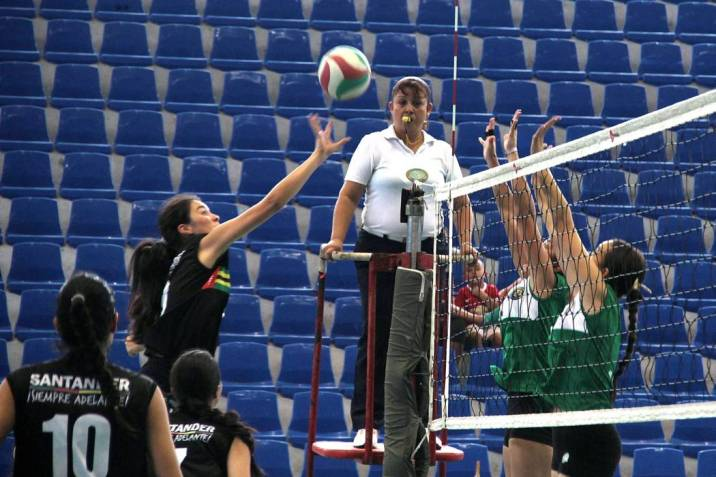
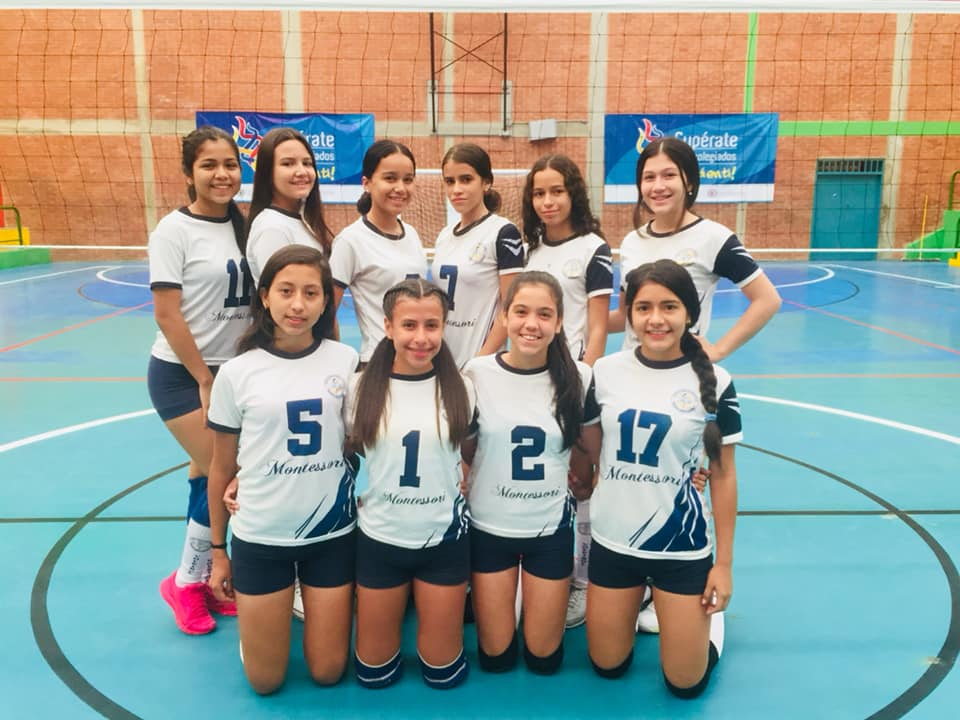

Bienvenidos a PanaNews
En Pana news puedes encontrar cualquier informacion de deporte en Santander!
Basketball
Los mejores equipos de la liga son el montevideo y la liga de baloncesto de santander los cuales son líderes en la sub 17 de baloncesto. Si el equipo queda de top 4 para arriba se enfrentará a los de otras ciudades, en estos clubes se necesita mucho nivel y buen rendimiento en los partidos porque en ocasiones llegan los ojeadores los cuales te pueden llevar mejores ligas y resultados. El mejor jugador de baloncesto de Santander es Hansel Atencia el cual fue convocado a la selección de baloncesto colombiana.

Reglas
Para dar inicio al juego, los primeros exponentes de la historia del baloncesto fueron divididos en dos equipos. Inicialmente hubo 18 participantes, por lo que cada equipo tuvo 9 integrantes: 3 en la defensa, 3 en el centro y 3 en la delantera. Después pasaron a ser siete miembros, para acabar siendo cinco.
Las 13 reglas originales del basquetbol fueron publicadas el 15 de diciembre de 1892 en The Triangle, el periódico del Springfield College. A partir de aquel entonces comenzó a extenderse la práctica de este deporte.

Equipos
Los mejores equipos de la liga son el montevideo y la liga de baloncesto de santander los cuales son líderes en la sub 17 de baloncesto. Si el equipo queda de top 4 para arriba se enfrentará a los de otras ciudades, en estos clubes se necesita mucho nivel y buen rendimiento en los partidos porque en ocasiones llegan los ojeadores los cuales te pueden llevar mejores ligas y resultados. El mejor jugador de baloncesto de Santander es Hansel Atencia el cual fue convocado a la selección de baloncesto colombiana.Eston son unos de los equipos:
- Cafeteros
- Montevideo
- Bucaros
- Inder Santander
- Valtam

Voleibol
Deporte que se practica entre dos equipos de seis jugadores en una cancha rectangular dividida transversalmente por una red; el objetivo es golpear el balón con las manos o brazos (aunque también se puede pasar con otras partes del cuerpo) para pasarlo por encima de la red, evitando que la pelota bote en el campo propio; los partidos constan de tres mangas de 15 puntos cada una.

Reglas
-
Se juega en una cancha de 18x9 metros, dividida por una red de 2.43 metros de alto para los hombres y 2.24 metros para las mujeres.
-
El partido se pone en marcha cuando se realiza el saque, que manda la bola a la mitad contraria de la pista.
-
Los equipos tienen permitido tocar el balón tres veces antes de que este deba cruzar la red hacia la parte de la pista rival. Vale aclarar que un bloqueo no se considera un toque.
-
Ningún jugador puede tocar la pelota dos veces seguidas.
-
Los jugadores pueden pasar la pelota al campo rival con cualquier parte del cuerpo.
-
Cada vez que una selección gana un saque al rival, sus jugadores rotan una posición en sentido de las agujas del reloj.
-
Cada equipo cuenta con dos tiempos muertos de 30 segundos cada uno por set.
-
Cada equipo puede hacer seis cambios en cada set, cuando el juego está parado, por la zona de ataque y cumpliendo la siguiente norma: en un mismo set, si el jugador A es cambiado por el jugador B y posteriormente quiere volver al campo solo podrá hacerlo sustituyendo a este jugador B.
-
El líbero, que viste diferente al resto de los jugadores, es el único que puede entrar y salir cuantas veces quiera.
Pocisiones
Los tres jugadores colocados frente a la red son los delanteros y ocupan las posiciones 4 (el delantero izquierdo), 3 (el delantero centro) y 2 (el delantero derecho).
Los otros tres son jugadores zagueros y ocupan las posiciones 5 (el zaguero izquierdo), 6 (el zaguero centro) y 1 (el zaguero derecho).

Fundamentos de Voleibol
Los principales fundamentos del voleibol son: el saque o servicio, la recepcion o pase, el levantamiento o colocación, el ataque, el bloqueo y la defensa.
Ligas
-
Liga Santandereana De Voleibol


Equipos
-
Warriors A
-
Caimanera
-
Pegaso
-
Legions
-
Olympic
Futbol
Que es Futbol?
El fútbol es el deporte más importante del mundo. Este deporte consiste en dos equipos de 11 jugadores cada. La meta es meter el balón dentro de la portería con cualquier parte del cuerpo exceptuando las manos y los brazos. El partido se reparte en 2 tiempos de 45 minutos cada en cada tiempo puede haber reposición. El equipo ganador es el que tenga más goles anotados o pueden quedar empate (Osea tener los mismos goles).
Las Reglas del Ftubol
Reglas del fútbol
Las 17 reglas del fútbol
La reglamentación del campo: 22 jugadores se paran a jugar de manera obligatoria se debe realizar en un rectángulo con medidas de entre 90 y 120 metros de largo, por no menos de 45 y no más de 90 metros de ancho.
Para torneos oficiales de la FIFA, máximo rector del fútbol a nivel mundial, las medidas mínimas deben ser 64m x 100m y un máximo de 75 m x 110m.
El Balón: De lo más sagrado que hay en el deporte. La pelota o el balón deberá contar con un perímetro de entre 68 y 70 cm, con un diámetro de entre 21,65 y 22,29 cm.
El deporte se practica entre dos equipos con 11 jugadores de campo cada uno, donde uno debe ser portero. En competencia oficial, cada escuadra tiene derecho a tres cambios en tiempo regular.
Todos los jugadores de campo y porteros portarán: una camiseta de su respectivo club, con su nombre y número como indicadores, un pantalón corto o short, medias largas, espinilleras y tenis especializados para jugar.
En caso de los guardametas, mantendrán el mismo patrón, con la diferencia de que usarán guantes y colores que sean distintos a los jugadores de campo convencionales, tanto locales como visitantes.
El director del partido. El árbitro central, es decir, quien compartirá el campo de juego con los jugadores, será el encargado de indicar el inicio, entretiempo y final del compromiso, además de impartir justicia en el campo.
El juez central tendrá la responsabilidad de amonestar (tarjeta amarilla) o expulsar (tarjeta roja) a quienes violen el reglamento arbitral, además de señalar los saques de banda, saques de meta, de esquina, goles, fueras de lugar, goles y, hoy en día, acudir al VAR para corroborar jugadas que deban ser corregidas.
El cuerpo arbitral se conforma de un silbante central, dos abanderados que se colocarán fuera del campo por las bandas y cada uno en una mitad asignada, además del cuarto silbante. Todos ellos apoyados por los asistentes del VAR.
Los línea o abanderados, serán el último punto de referencia para el árbitro central. Ellos apoyarán las jugadas que se susciten por las bandas, decretán saques de mano, indicarán faltas o cambios y además, son los primeros en comunicar un fuera de lugar.
El tiempo reglamentario es de 45 minutos cada tiempo, para un total de 90. Sin embargo, el árbitro podrá añadir tiempo de compensación cuando el juego sea detenido por lesiones o algún otro incidente.
En etapas de eliminatoria directa, en caso de un empate en el reglamentario, se jugarán 30 minutos más divididos en dos tiempos de 15 min. En caso de no haber un ganador en esta instancia, se disputarán los penales.
Una vez realizado un volado entre los capitanes, supervisado por el árbitro central, el ganador elegirá un lado de la cancha y perdedor sacará el balón.
Para comenzar el partido, el árbitro pitará el inicio y un jugador parado justo en el centro del campo con el balón en el punto central, pateará hacia su costado y el reloj continuará su marcha.
En términos simples, el balón estará en juego cuando se mantenga dentro de las líneas que dan forma al campo de juegos, sea por aire o por tierra.
Se determinará fuera de juego cuando rebase en su totalidad las líneas de banda o de meta.
Para evitar cualquier polémica, el gol se decretará una vez que el balón rebase en su totalidad la línea marcada entre los tres postes.
El equipo con más goles ganará el partido.
Un jugador (delantero) que tome un balón por delante de la línea defensiva rival luego de un pase de algún compañero suyo, estará en posición fuera de juego.
El 'último hombre' se llamará al defensor que esté más atrasado y será la última referencia para el abanderado para señalar o no, un fuera de juego
Las faltas serán agresiones, jugadas peligrosas, golpes, choques con fuerza desmedida entre los jugadores.
Entre otras sanciones, se encuentran las 'manos', que será el contacto con el brazo o mano de algún jugador de campo (no el portero dentro del área) con el balón.
Para los porteros; éstos no podrán tomar la pelota con las manos fuera de su área, o tomarla cuando éste llega a pase de un compañero. De ser así, se señalará un tiro libre dentro del área, no un penalti.
H
ay dos tipos de tiro libre, el directo y el indirecto.
El directo será aquel que puede ser ejecutado directo a la portería rival, con una barrera de jugadores rivales a 9,15 metros de distancia.
El indirecto es aquel que debe ser jugado hacia otro jugador, cercano o lejano.
El penalti se señala cuando un jugador comete una infracción dentro de su propia área y concede un tiro directo desde el punto penal, que se sitúa a 11 metros de la portería, misma que estará protegida por el portero al momento del cobro.
Se señala cuando la pelota rebasa las líneas laterales. Esta será la manera de reanudar el partido, sin que el reloj se detenga. El árbitro señalará la posesión al equipo que no tocó la pelota antes de que ésta saliera.
Mismo escenario que con los saques de banda, pero por línea final. Una vez que la pelota rebase las líneas donde se encuentran las porterías, si el último en tocarla fue un jugador rival, el portero reanudará el encuentro desde su área chica.
Caso contrario al saque de meta. Si la pelota rebasa la línea final y fue tocada por últimas vez por un defensor, el árbitro entonces, apoyado por su abanderado, marcará un saque de esquina que se cobrará por la una de las puntas más cercanas a donde salió el balón.